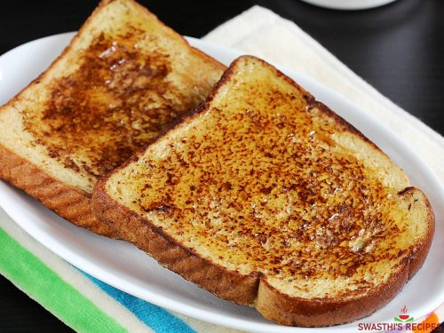

French Toast

Description
French toast is a simple recipe that is often mistaken for a more upper class meal or as difficult. This recipe will show that once you have an understanding of the recipe you will not have to worry and can use it to impress others.
Ingredients
- Sliced Bread
- Eggs
- Cinnamon
- Brown Sugar
- Milk
- Milk
Steps
- Toast bread slices.
- Add eggs, milk, cinnamon, and brown sugar to a bowl and mix thoroughly.
- Place bread slice into bowl mixture, flip to coat other side.
- Place bread into buttered pan on low heat.
- Cook until golden and flip and repeat.
- Serve with berries, syrup, etc to flavour.